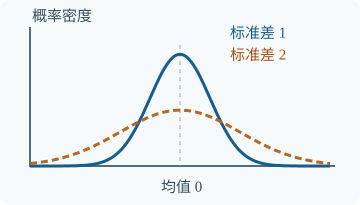

第4章 随机变量的数字特征
完整分布能描述随机变量的全部概率规律；期望、方差和相关系数则从几个角度概括它。概括会丢失信息，因此这些数字不能代替完整分布。
依据：王丽主编《概率论与数理统计》，科学出版社，2026年第一版，第4章；例题均为新编。
4.1 数学期望
教材习题：第四章课后题逐题讲解，包含解题条件和关键步骤。
4.1.1 随机变量的数学期望
期望是按概率加权的平均值，可以理解为大量相同条件下重复观察时的长期平均位置；它不一定是实际可能取到的数。例如公平骰子的期望是3.5，但一次不可能掷出3.5。
连续：E(X)=∫−∞∞x f(x)dx
离散情形中，每个值乘上对应概率再相加；连续情形使用密度积分。无限求和或积分需满足绝对收敛等存在条件，并非每个分布都有有限期望。期望的单位与 X 相同。
某次售货利润 X 可能为 −10元、0元、20元，概率分别为0.2、0.3、0.5。求平均利润。
把每种利润乘以其发生概率，再相加：E(X)=−10×0.2+0×0.3+20×0.5。
答案：E(X)=8元。
8元不是单次一定得到的利润，它是这个模型的概率加权平均。
4.1.2 随机变量函数的期望
求 Y=g(X) 的期望时，不一定先求 Y 的分布。只要期望存在，可直接用原变量的分布加权：
二维变量同理，E[g(X,Y)] 为联合概率加权和或对联合密度的二重积分；要使用联合分布，不可无条件拆成边缘分布相乘。
X 等概率取 −1、0、1，求 E(X²) 和 [E(X)]²。
E(X)=(-1+0+1)/3=0；E(X²)=(1+0+1)/3。
答案：E(X²)=2/3，而 [E(X)]²=0。
先平方再平均与先平均再平方一般不同。
4.1.3 数学期望的性质
期望存在时 E(aX+bY+c)=aE(X)+bE(Y)+c。这叫线性性质，不要求独立。若 X、Y 独立且相关期望存在，才有 E(XY)=E(X)E(Y)；反过来仅凭这一个等式不能断言独立。
常见结果：0-1分布 E(X)=p；二项分布 B(n,p) 的期望为 np；泊松分布 P(λ) 为 λ；均匀分布 U(a,b) 为 (a+b)/2；正态分布 N(μ,σ²) 为 μ；指数分布 E(λ) 为1/λ。二项公式可以把成功次数写成 n 个0-1变量之和，再利用线性性质得到。
三台设备今天发生故障的概率分别是0.1、0.2、0.3。求故障设备数的期望，是否需要独立？
令 Xᵢ=1 表示第 i 台故障，否则为0。总数 X=X₁+X₂+X₃；每个 E(Xᵢ) 等于各自故障概率。
答案：E(X)=0.1+0.2+0.3=0.6台，不需要独立。
这是长期平均台数，不意味着某天恰好有0.6台故障。
详细讲解与练习
期望不是“最可能的值”
期望 E(X) 把每个可能值按其概率加权，描述分布的平均水平。如果独立重复试验并满足适当条件，样本平均值会逐渐接近期望。期望不一定是 X 可以取到的值，也不一定是最可能的值。
离散型 X 取 xᵢ 的概率为 pᵢ 时，E(X)=Σxᵢpᵢ，前提是相应期望存在。连续型则在期望存在时用积分 E(X)=∫x f(x)dx，积分范围为 X 的支持范围。
例 1：公平骰子点数 X 的期望是 (1+2+3+4+5+6)/6=3.5。一次掷骰子不可能出现 3.5，但许多次独立掷骰的平均点数可以接近 3.5。六个点数一样可能，没有一个比其他点数更可能；这并不妨碍期望为 3.5。
随机变量函数的期望
先明确要计算的是 E[g(X)]，不是先求 E(X) 再套函数。离散情形 E[g(X)]=Σg(xᵢ)pᵢ，连续情形 E[g(X)]=∫g(x)f(x)dx，均需期望存在。
例 2：公平骰子 X，求 E(X²)。将点数分别平方后加权，E(X²)=(1²+2²+3²+4²+5²+6²)/6=91/6。另一方面 [E(X)]²=3.5²=49/4。两者不同；通常 E(X²)≠[E(X)]²。
线性性质
只要相关期望存在，E(aX+bY+c)=aE(X)+bE(Y)+c。这里不要求 X、Y 独立。但乘积的情况不同：通常不能直接把 E(XY) 写成 E(X)E(Y)；若 X、Y 独立且相应期望存在，则可以。
例 3：若 E(X)=2、E(Y)=−1，则 E(3X−2Y+4)=3×2−2×(−1)+4=12。不必知道两变量是否独立。
自测与解答
1. X 以 1/4、1/2、1/4 的概率分别取 0、1、2。求 E(X) 与 D(X)。
解：E(X)=0×1/4+1×1/2+2×1/4=1。E(X²)=0+1/2+4/4=3/2，所以 D(X)=3/2−1²=1/2。
2. 若 D(X)=3，求 D(−2X+5)。
解：方差按系数的平方变化，D(−2X+5)=4×3=12。负号平方后消失，平移常数不影响方差。
3. 若 D(X)=2、D(Y)=3，且二者独立，求 D(X+Y)。
解：独立且方差存在时协方差为零，故 D(X+Y)=2+3=5。若只知道各自方差而不知道共同关系，不能必然得到 5。
4. 正确还是错误：“两个变量不相关，所以一定独立。”
解：错误。上文例 6 就给出协方差为零却不独立的情况。
4.2 方差
4.2.1 随机变量的方差
两个分布的期望可能相同，但一个结果集中、另一个波动很大。方差衡量与期望的平均平方偏离，教材记 D(X)，也常记 Var(X)。若 μ=E(X)，则：
推导：展开平方 X²−2μX+μ²，取期望后利用 E(X)=μ，得到 E(X²)−2μ²+μ²。平方使正负偏差不抵消；方差单位是原单位的平方，标准差 σ=√D(X) 的单位与原变量相同。方差等于0表示 X 以概率1取常数。
示意图：两条对称曲线的中心相同，蓝色更宽，表示较大的波动；曲线仅作形状示意，不按比例。
甲每次固定得到5元；乙以相同概率得到0元或10元。比较期望和方差。
甲的期望为5、离均差恒为0；乙的期望为 (0+10)/2=5，E(乙²)=(0²+10²)/2=50。
答案：两者期望都是5元；甲方差为0，乙方差为50−25=25元²，乙的标准差为5元。
4.2.2 常见分布的方差
0-1分布的方差 p(1−p)；B(n,p) 为 np(1−p)；P(λ) 为 λ；U(a,b) 为 (b−a)²/12；E(λ) 为1/λ²；N(μ,σ²) 的方差就是 σ²。二项结果需要各次试验相互独立。
4.2.3 方差的性质
D(X±Y)=D(X)+D(Y)±2Cov(X,Y)
加常数只平移，不改变波动；乘 a 后偏差也乘 a，平方后成为 a²。若 X、Y 独立且方差存在，协方差为0，因而和或差的方差都等于各方差之和。没有独立或不相关条件时，不能漏掉协方差项。
X、Y 独立，D(X)=4，D(Y)=9。求 D(2X−Y+3)。
常数3不影响方差；由于独立，交叉协方差为0。
答案：D(2X−Y+3)=2²×4+(−1)²×9=25。
详细讲解与练习
方差衡量相对均值的波动

两条曲线均以 0 为中心，蓝线标准差为 1、橙色虚线标准差为 2。标准差较大意味着分布更分散；密度峰值更高不代表“某个精确值的概率更大”，连续变量的单点概率均为 0。图中仅展示有限横轴范围，曲线完整面积各为 1。
方差 D(X)=E[(X−E(X))²]。先看偏离均值多少，再平方并取平均。平方使正负偏差不会互相抵消；代价是单位变成原单位的平方。标准差 σ(X)=√D(X)，单位与 X 相同。
计算时常用 D(X)=E(X²)−[E(X)]²，前提是二阶矩存在。利用上一节骰子结果：D(X)=91/6−49/4=35/12，标准差约为 1.708。
方差不可能为负；若算出明显负数，应检查运算或模型。不同量的单位不同时，不宜直接比较方差数值。
平移与缩放为什么影响不同？
D(aX+b)=a²D(X)。加上常数 b，只改变中心，不改变每个值相对中心的偏差；乘以 a 时，偏差也乘以 a，平方后得到 a²。
例 4：某温度变量方差是 4（摄氏度平方），定义 Y=2X+3，则 D(Y)=2²×4=16。常数 3 不影响方差。
4.3 协方差与相关系数
4.3.1 协方差
协方差衡量两个变量偏离各自均值时是否倾向同向变化。若高于各自均值时常同时出现，乘积偏正；一高一低常同时出现，乘积偏负。
=E(XY)−E(X)E(Y)
前提是相关期望存在。协方差的单位是 X 的单位乘以 Y 的单位，因此单看数值大小不便比较不同量纲的数据。展开定义可得 D(X+Y)=D(X)+D(Y)+2Cov(X,Y)。
(X,Y) 等概率取 (0,0)、(1,1)，求 Cov(X,Y)。
E(X)=E(Y)=1/2，E(XY)=(0+1)/2=1/2。
答案：Cov(X,Y)=1/2−1/4=1/4。
这里两者总是相等，所以同向变化，协方差为正。
4.3.2 相关系数
若两个方差都有限且大于0，相关系数定义为 ρ=Cov(X,Y)/[√D(X)√D(Y)]，没有单位，−1≤ρ≤1。正负表示线性变化方向，绝对值越接近1，线性关系越强。ρ=0 称不相关，只说明没有线性相关，并不保证没有非线性关系。
独立且方差有限会推出不相关；反过来一般不成立。特殊地，若 (X,Y) 服从二维正态分布，则不相关与独立等价。|ρ|=1 意味着存在概率1成立的非退化线性关系；正负号对应斜率方向。相关不自动说明因果。
X 等概率取 −1、0、1，令 Y=X²。判断它们是否不相关及独立。
E(X)=0，E(Y)=2/3，E(XY)=E(X³)=(-1+0+1)/3=0，所以协方差为0。另一方面，知道 X=0 时 Y 必为0，但 P(Y=0)=1/3，条件信息改变了 Y 的概率。
答案：不相关，但不独立。
非线性关系 Y=X² 清楚说明“相关系数为0”不是“没有任何关系”。
已知 D(X)=4、D(Y)=9、Cov(X,Y)=3，求相关系数及 D(X+Y)。
标准差分别为2和3；和的方差需加两倍协方差。
答案：ρ=3/(2×3)=0.5；D(X+Y)=4+9+2×3=19。
ρ在−1到1之间，方差非负，计算结果合理。
例题与重点理解
题 8：不相关不等于独立
X 以相等概率取 −1、0、1，Y=X²。判断两者是否独立，并求协方差。
查看解答
E(X)=0，E(XY)=E(X³)=0，所以 Cov(X,Y)=0−0·E(Y)=0。但是 X=0 时必有 Y=0，P(X=0,Y=0)=1/3，而 P(X=0)P(Y=0)=1/9，因此不独立。这个具体反例说明零协方差不能一般性推出独立。
详细讲解与练习
两个变量之和的方差
协方差定义为 Cov(X,Y)=E[(X−E(X))(Y−E(Y))]，也可写成 E(XY)−E(X)E(Y)，假设相应期望存在。它描述两者相对于各自均值的线性共同变化方向：正值表示同向变化倾向，负值表示反向变化倾向。
一般公式：D(X+Y)=D(X)+D(Y)+2Cov(X,Y)；D(X−Y)=D(X)+D(Y)−2Cov(X,Y)。只有协方差为零时，和的方差才可直接相加。独立且二阶矩存在可推出协方差为零，但协方差为零并不一定独立。
例 5：D(X)=4、D(Y)=9、Cov(X,Y)=1，则 D(X+Y)=4+9+2=15，D(X−Y)=4+9−2=11。若误以为所有情形都能直接相加，会漏掉共同变化的影响。
相关系数与独立
当两个变量标准差均非零时，相关系数 ρ=Cov(X,Y)/[σ(X)σ(Y)]，取值在 −1 到 1 之间。它是无量纲的线性相关程度指标；相关系数接近 0 不代表没有任何非线性关系。若某个变量方差为零，则上述相关系数分母为零，不能按此公式定义。
例 6：不相关但不独立。 X 以相同概率取 −1、0、1，Y=X²。E(X)=0，E(Y)=2/3，E(XY)=E(X³)=0，因此 Cov(X,Y)=0。但知道 X=0 就确定 Y=0；例如 P(X=0,Y=0)=1/3，而 P(X=0)P(Y=0)=1/9，乘积关系不成立，所以不独立。
自学检验：期望和方差分别反映什么？
先自己想一想：随机变量 X 取值 0、1、2 的概率分别为 1/4、1/2、1/4。求 E(X) 和 D(X)。
查看详细解答
E(X)=0×1/4+1×1/2+2×1/4=1。先求 E(X²)=0²×1/4+1²×1/2+2²×1/4=3/2，再用 D(X)=E(X²)−[E(X)]²=1/2。期望描述平均水平，方差描述相对均值的离散程度；方差的单位是原单位的平方。
这道练习为新编。建议先写出思路，再展开答案检查。